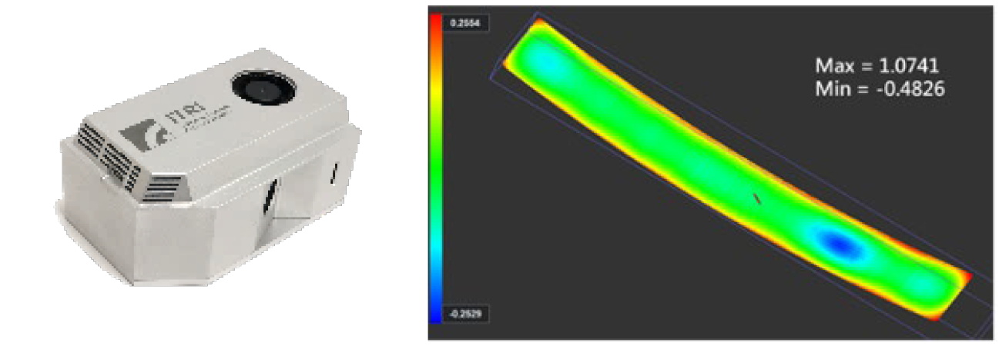

| 透明工件雷射 3D 感測技術 Laser 3D Scanning Technology for Transparent Workpiece |
| 非接觸式的快速掃描透明工件表面輪廓，利用工件鏡面反射光 學結合三角量測演算，線上直接掃描透明工件，以一台設備取 代現有量測技術所需之繁鎖程序(包含離線搬運至檢測室、噴粉 改善透光性、進行光學量測、清潔粉末以及檢查清潔是否完成)， 大幅縮短品檢時間。 The non-contact fast scanning of the surface contour of the transparent workpiece, using the mirror reflection optics of the workpiece combined with the triangulation measurement calculation, directly scans the transparent workpiece online. This method replaces the complicated procedures required by the existing measurement technology which greatly shortens the inspection time.  |
| 技術洽詢聯絡人：許益嘉 聯絡電話：06-3847460 E-mail：LeoHsu@itri.org.tw |